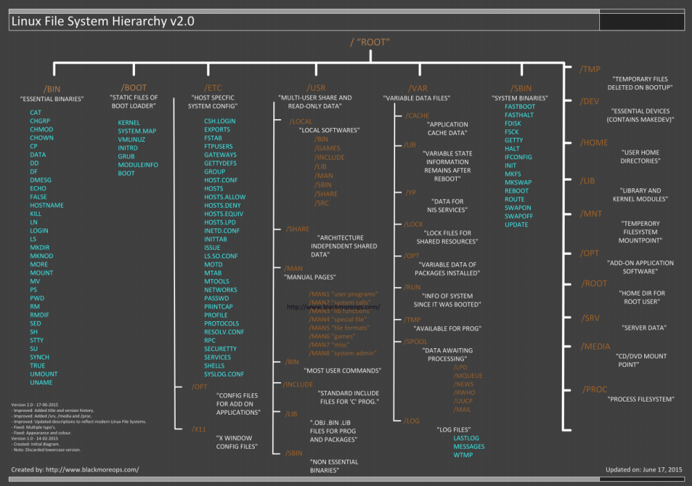

file system
*Can vary for different versions of Linux
•
/bin and
/sbin are where are stored executable programs
•
/root is the root login
account's home directory. This is hugely important because if you log in directly as root, this will be your
initial location in the directory structure. If you log in as an individual user other than root, you'll be put
in that user's directory, typically somewhere inside of /home.
•
/dev stores devices
(drives, terminals, etc.).
•
/etc holds configuration items, like the account information
(stored in /etc/passwd) and hashed passwords (stored in /etc/shadow).
•
/home contains
users' home directories.
•
/lib contains common libraries.
•
/mnt is
where various remote and temporary file systems (CD-ROMs, floppies, etc.) are attached.
•
/proc is a virtual file system used to store kernel info.
•
/tmp is for
temporary data and is usually cleared at reboot.
•
/usr holds user programs and other
data.
•
/var holds many different items, including logs (/var/log/).
•
/opt stores optional items and is often a location for specialized tools that have been added to a
distribution.
Bibliography:
https://www.blackmoreops.com/2015/06/18/linux-file-system-hierarchy-v2-0/